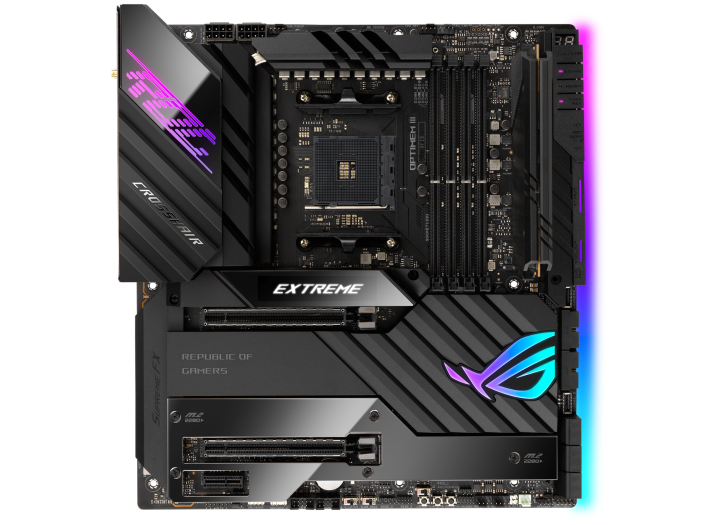

Úgy gondoltam, hogy egy oldalra csinálom meg IKT-ra a dolgokat.
Ha leljebb görget, akkor megtalálja az összes feladatot.
Montázs
Luczi Alex
Ez az első weboldalam.

Képre kattintós linkes feladat
Motherboard
ROG CROSSHAIR VIII EXTREME
AMD X570 EATX gaming motherboard with 18+2 power stages, five M.2 slots, USB 3.2 Gen 2x2 front-panel connector with PD 3.0 60 W support, USB 3.2 Gen 2 front-panel connector, dual Thunderbolt™ 4, Marvell® AQtion 10 Gb Ethernet, Intel® 2.5 Gb Ethernet, PCIe® 4.0, onboard WiFi 6E and Aura Sync RGB lighting
Órarend
| Hétfő | Kedd | Szerda | Csütörtök | Péntek |
|---|---|---|---|---|
| Digitális Kultúra | ||||
| Magyar nyelv és irodalom | Matematika | Angol Nyelv | Matematika | Digitális Kultúra |
| Magyar nyelv(komp) | Magyar nyelv és irodalom | Testnevelés | Angol nyelv | Magyar nyelv és irodalom |
| Történelem | Magyar nyelv és irodalom | Matematika | Informatika és távköz | Angol nyelv |
| Testnevelés | Angol nyelv | Magyar nyelv és irodalom | Informatika és távköz | Osztályfőnöki |
| Matematika | Komplex természettud | Történelem | Informatika és távköz | Matematika (komp) |
| Komplex természettud | IKT projektmunka | Komplex természettud | IKT projektmunka | Történelem |
| Testnevelés | Programozási alapok | |||
| Testnevelés | Programozási alapok |
Vonalak
h1
h2
h3
h4
h5
Recept
Mac and Cheese
-
Előkészítés:
5 perc
-
Főzés:
6 perc
-
Összesen:
11 perc
Hozzávalók:
- 20 dkg makaróni
- 15 dkg cheddar sajt
- 2 dl tej
- 2 evőkanál finomliszt
- 5 dkg vaj
- bors ízlés szerint
- só ízlés szerint
Előkészítés:
- A vajat olvasszuk meg, majd szórjuk rá a lisztet, és sűrűn kevergetve, közepes lángon "pirítsuk" pár percig. Majd fokozatosan adjuk hozzá a szobahőmérsékletű tejet, amit aztán mindig keverjünk el. A lényeg, hogy egy nem túl folyós állagú masszát kapjunk.
- A masszánkat sózzuk-borsozzuk ízlésünknek megfelelően! Majd keverjük hozzá a lereszelt cheddar sajtot, és keverjük jól el.
- Záróakkordként pedig öntsük a kifőtt tésztát a masszába, és keverjük jól össze. Kevés frissen őrölt bors még mehet a tetejére tálalásnál, és ennyi. Jó étvágyat hozzá!